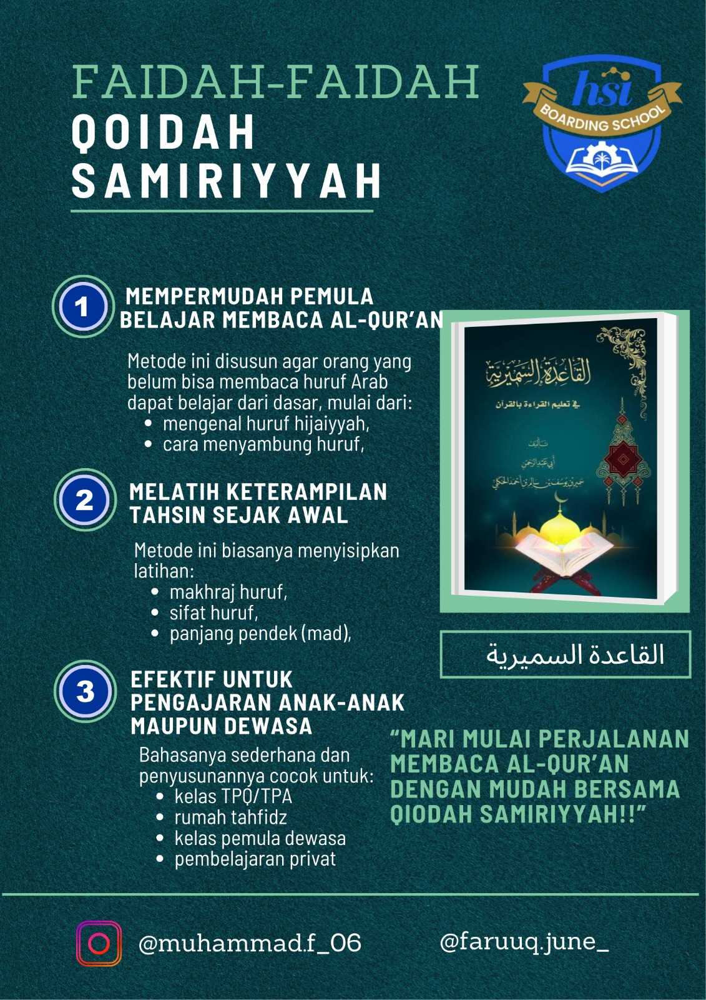

Progress Tahajji
Dokumentasi pembelajaran membaca Al-Qur'an dengan tartil, mempelajari tajwid, makhraj, dan bacaan yang benar.
See
Hafalan Juz 30
Progress menghafal juz 30 (Juz Amma) yang berisi surat-surat pendek dari Al-Qur'an.
See